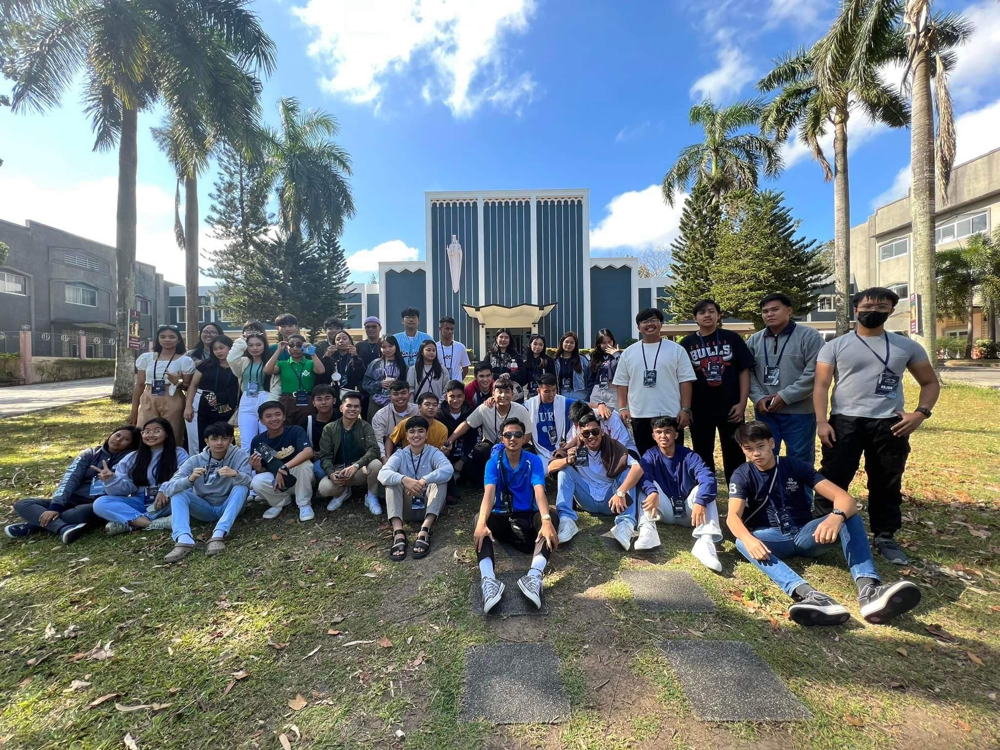
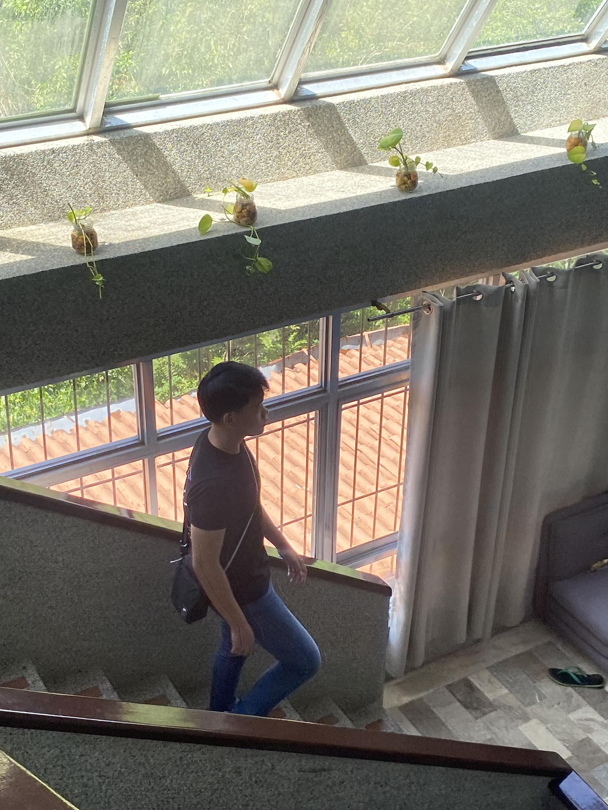
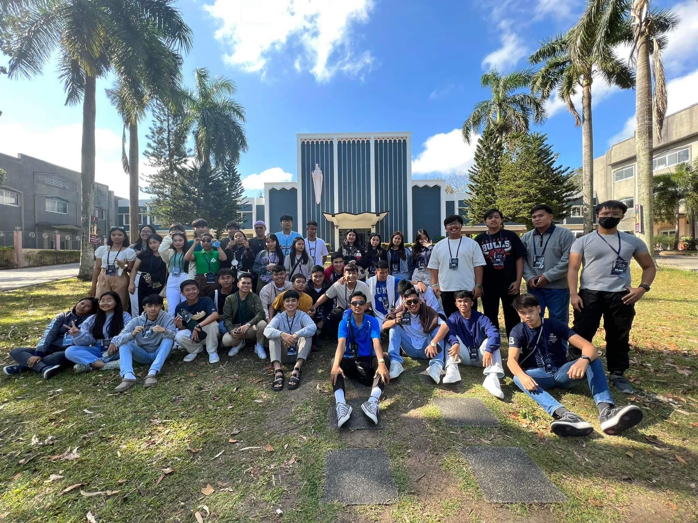
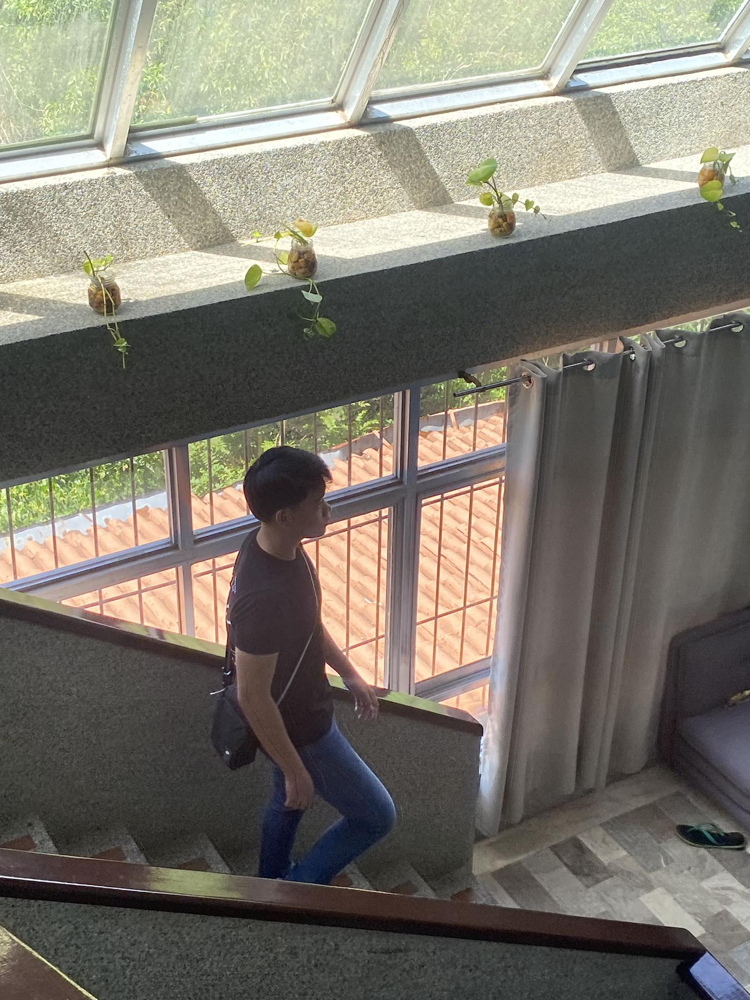

Reflection
If I were to describe how I finish all this exam activities and projects my answer would be consistency and discipline.
I would say discipline because instead of playing online games and going out on times of exam I would prefer to stay at home and review mostly
the day before the exam which provided me fresh knowledge the next stay and consistency because I would be consistent on repeating this
all over and over every time there is an activity or exam the next day starting from 1st to 4th quarter currently.
All of this become worthy seeing my result in the exam with only minor mistakes which motivated me to learn more.
There are many things I also learned not only to these activities, projects and exam but also to myself when I was in the process of making all of these.
One of them is that grades doesn’t define my knowledge and the mistakes I had did during the process of making all of these made me motivated to learn
instead of feeling down. I also realize that all of these started as a vision that turn into a reality which made me realize how visions in our life are powerful.